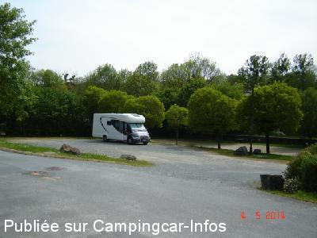
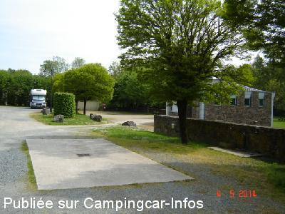
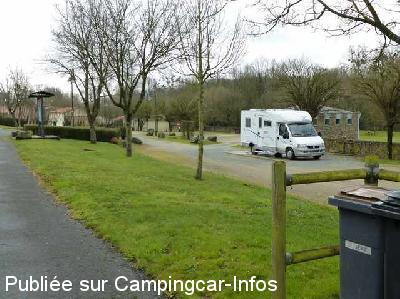
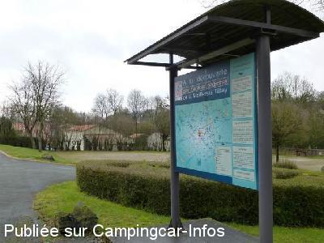

ASN = Aire de services avec stationnement nuit possible de :
LA MEILLERAIE TILLAY
(N° 511)
Accès/adresse :
Rue des Ombrages
Zone de loisirs du Lay
85700 LA MEILLERAIE TILLAY
Zone de loisirs du Lay
85700 LA MEILLERAIE TILLAY
Latitude : (Nord) 46.73886° Décimaux ou 46° 44′ 19′′
Longitude : (Ouest) -0.84532° Décimaux ou 0° 50′ 43′′
Tarif : Gratuit
Services :


Douches et eau chaude pour la vaisselle si vous le désirez
Autres informations :
Ouvert du 01/04 au 31/10
6 emplacements
Tel mairie : +33(0)251 658 213

Le 18/08/2014 par PC

Le 18/08/2014 par PC

Le 08/04/2013 par Papapi AC

Le 08/04/2013 par Papapi AC
de
Régine et Christian
le 03/08/2015 :
Une aire 6 étoiles !
à noter que le raccord fileté pour avoir l'eau est le grand modèle... mais vous en avez un bien sur
Une aire 6 étoiles !
à noter que le raccord fileté pour avoir l'eau est le grand modèle... mais vous en avez un bien sur
de
PC
le 18/08/2014 :
§ Stayed overnight on this aire which is excellent. There are showers and WC with warm water for washing up if you wish. We stayed with one other van which arrived late. The night was perfectly quiet.
Isn't France great for campingcars, I love the country and it's people. Many thanks to the ville aussi.
§ Stayed overnight on this aire which is excellent. There are showers and WC with warm water for washing up if you wish. We stayed with one other van which arrived late. The night was perfectly quiet.
Isn't France great for campingcars, I love the country and it's people. Many thanks to the ville aussi.
de
Yove18
le 08/09/2013 :
Tout simplement superbe!!!! Un régal d'y séjourner. gratuite et équipée de sanitaires cette aire vaut vraiment le plaisir de s'y arréter
Tout simplement superbe!!!! Un régal d'y séjourner. gratuite et équipée de sanitaires cette aire vaut vraiment le plaisir de s'y arréter
de
Papapi AC
le 10/04/2013 :
Le calme - Jeux de proximité - Supérette "Votre Marché" dans le bourg - Circuits de randonnées - Services gratuits bien pensés - Que du bonheur. MERCI à la commune
Le calme - Jeux de proximité - Supérette "Votre Marché" dans le bourg - Circuits de randonnées - Services gratuits bien pensés - Que du bonheur. MERCI à la commune
de
niceday
le 15/09/2011 :
bonjour aire de services pratique, pour le stationnement une taille des arbres serait souhaitable,
pour l'alimentation en EDF disponible UNIQUEMENT dans les sanitaires, interdiction de brancher les CCars <
>
bonjour aire de services pratique, pour le stationnement une taille des arbres serait souhaitable,
pour l'alimentation en EDF disponible UNIQUEMENT dans les sanitaires, interdiction de brancher les CCars <
de
La Garenne 85
le 14/05/2010 :
L'aire de services a été entièrement refaite : dalle avec grille au sol et installation vidange wc et arrivée d'eau (double : 1 pour la cassette et 1 pour le plein d'eau). Les services et le stationnement sont gratuits. Un bloc sanitaire avec douche (pour la douche, acheter le jeton en mairie ou en face, au N° 13). Vu un adjoint au Maire qui nous a dit que la commune avait préféré mettre les services gratuits car la borne Flot Bleu était constamment dégradée.
L'aire de services a été entièrement refaite : dalle avec grille au sol et installation vidange wc et arrivée d'eau (double : 1 pour la cassette et 1 pour le plein d'eau). Les services et le stationnement sont gratuits. Un bloc sanitaire avec douche (pour la douche, acheter le jeton en mairie ou en face, au N° 13). Vu un adjoint au Maire qui nous a dit que la commune avait préféré mettre les services gratuits car la borne Flot Bleu était constamment dégradée.
de
maurice
le 26/03/2010 :
Rien à dire, aire grand luxe dans cadre verdoyant, tranquille... Merci à la commune, on en redemande.
Rien à dire, aire grand luxe dans cadre verdoyant, tranquille... Merci à la commune, on en redemande.
de
Montels
le 30/08/2009 :
Dans la fiche, WC public devrait être corrigé car il y a des WC à disposition (très propres) ainsi que de l'eau chaude gratuite aux robinets des lavabos. Bravo pour cette aire très tranquille et superbe! §
Dans la fiche, WC public devrait être corrigé car il y a des WC à disposition (très propres) ainsi que de l'eau chaude gratuite aux robinets des lavabos. Bravo pour cette aire très tranquille et superbe! §
de
petillon
le 04/08/2009 :
Un grand bravo à ce petit bourg qui a fait les choses en grand. Chaque emplacement a une grille de vidange et un néon éclairant chaque CC. Situé devant un parc, vraiment au calme. Le boulanger était en vacances, dommage ! Que les grandes villes prennent exemple !
Un grand bravo à ce petit bourg qui a fait les choses en grand. Chaque emplacement a une grille de vidange et un néon éclairant chaque CC. Situé devant un parc, vraiment au calme. Le boulanger était en vacances, dommage ! Que les grandes villes prennent exemple !
de
Olivier Courmarcel
le 10/08/2008 :
Vraiment sympa, accueil sympa, site magnifique. Visite et randonnée possible. Tout est gratuit et avec ça : eau chaude, prise de courant, douche.
Passez voir le boulanger, près de l'église, il vaut le détour.
Vraiment sympa, accueil sympa, site magnifique. Visite et randonnée possible. Tout est gratuit et avec ça : eau chaude, prise de courant, douche.
Passez voir le boulanger, près de l'église, il vaut le détour.
de
bolzer
le 11/09/2006 :
Mise à jour : > 10 emplacements, > WC publics + douche + 3 lavabos avec eau chaude + 2 éviers à vaisselle >>> Ceci est gratuit.
> borne payante, tarif actuel = 2€
Mise à jour : > 10 emplacements, > WC publics + douche + 3 lavabos avec eau chaude + 2 éviers à vaisselle >>> Ceci est gratuit.
> borne payante, tarif actuel = 2€